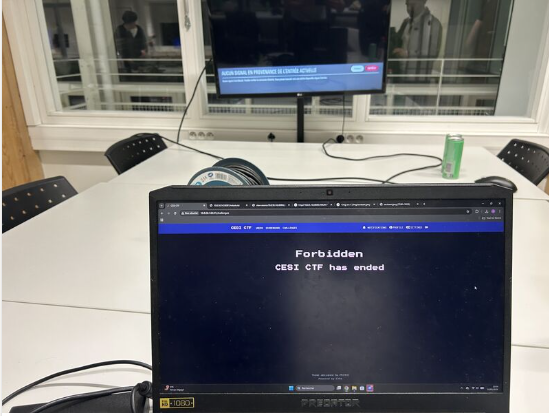
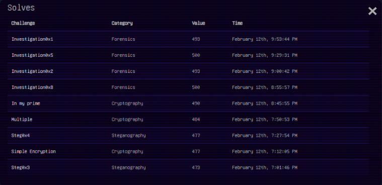

Challenge de cybersécurité organisé sur le campus CESI de La Rochelle. 4 heures pour résoudre un maximum d'épreuves techniques dans un cadre légal et éthique.

Événement du jeudi 12 février 2026, de 18h à 22h, centré sur la pratique offensive et défensive en cybersécurité à travers des défis techniques, organisé sur le campus CESI de La Rochelle.
Récupérer des "flags" cachés en résolvant des épreuves variées, dans un cadre légal et éthique simulant des scénarios d'intrusion réels.
Notre équipe a dominé le classement pendant la quasi-totalité des 4 heures, restant dans le top 3 la majeure partie du temps. Dans le rush des 5 dernières minutes, deux équipes nous ont dépassés, nous laissant finalement à la 5ème place — une performance solide dans un contexte très compétitif.

Cette participation m'a permis de renforcer mes compétences pratiques en cybersécurité et de progresser sur des cas concrets, dans une ambiance à la fois compétitive et collaborative. Les épreuves de forensic (dump RAM) et de cryptographie ont particulièrement sollicité ma rigueur analytique, tandis que les challenges web ont confirmé mon intérêt pour la sécurité offensive. Une expérience que je compte renouveler.